UX Internship & Web Design
G-Class Drivers
A UX internship with a driving school in the GTA that kept growing. Research first, then a rebuilt website, and now student, instructor and office apps that take the whole office digital.
Role
UX Research Intern, Web Designer, Product + UX Lead
Team
Embedded with the business
Duration
Sept 2025 – present
Tools
Figma, Figma Make, Google Forms
The Challenge
Drivers and students were dealing with unpredictable scheduling and a booking site where a recurring pop-up interrupted almost every task.
My Approach
Interviewed 8 drivers, ran a follow-up survey to quantify what came up, then did a moderated task-based test on the live site covering registration, schedules, contact, and booking.
The Result
Two full research reports, a rebuilt site that is live today with the pop-up gone, and three connected apps that move the office off paper.
My Contribution
I ran the interviews and survey myself, did the thematic analysis, ran the usability test, and designed and built the redesigned site in Figma Make.
Phase 1
UX Research
UX research study on driving school instructor and student experiences in the GTA, conducted for G-Class Luxury Transport, a premium limousine service partner.
The Problem
- Limited understanding of daily operational challenges faced by driving instructors and students
- Lack of data on how instructors and students interact with booking systems, navigation tools, and client communication
- Need to identify pain points that contribute to instructor and student dissatisfaction and turnover
The Opportunity
- Improving instructor and student experience could directly impact service quality and customer satisfaction
- Redesign the driver app to reduce booking friction, provide clearer route information, and minimize manual data entry that slows down operations
Research Process
Phase 1: Discovery Interviews
Conducted in-depth interviews with 8 G-Class drivers to explore their experiences, daily routines, challenges, and needs, using open-ended questions to uncover pain points they hadn't put into words.
Phase 2: Quantitative Validation
Developed and distributed surveys to a larger driver population to validate Phase 1 findings and quantify the prevalence of identified issues.
Data Synthesis & Analysis
Analyzed interview transcripts using thematic analysis to identify patterns, recurring themes, and key insights about driver experiences and operational challenges. Synthesized findings into actionable strategic recommendations.
Insights & Recommendations
- Implement more transparent and predictable scheduling systems that respect driver work-life balance while meeting business needs
- Establish clearer protocols for driver–client–dispatcher communication to reduce confusion and improve service coordination
- Create feedback loops that help drivers understand their performance, recognize excellence, and identify areas for growth
Deliverables
- Full Research Report (PDF), complete findings and recommendations
- Phase 2 Full Report (PDF), full documentation and data analysis
- Initial discovery research findings
- Validation research and insights
Phase 2
Website Redesign
Turning the research into an actual rebuilt site: a driving school homepage that leads with trust, course clarity, and a straightforward path to booking.
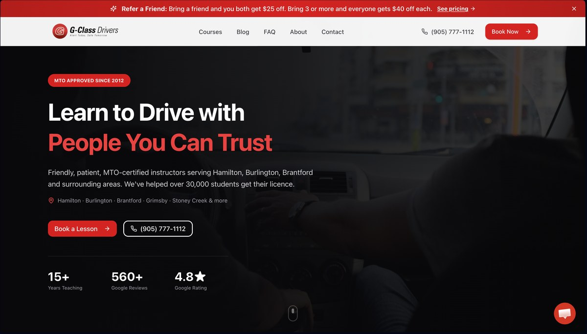
From Research to Redesign
Every change traces back to something specific from the Phase 1 and Phase 2 research. This wasn't a general "make it look better" pass.
Research said: the pop-up was the top frustration
Both the discovery interviews and the follow-up survey flagged the same recurring pop-up as the single biggest source of frustration during booking. Fix: removed entirely in the redesign. No replacement modal, no delayed version, just gone.
Research said: schedules were hard to find
Testers expected class schedules under a "Courses" section and instead found them scattered under About Us and FAQ. Fix: one Courses section, one source of truth, no hunting across unrelated pages.
Research said: booking took longer than it should
The actual registration page required filling in contact details, then picking a slot from dense multi-column schedule tables via radio buttons, then choosing between three separate payment paths (credit card, Interac e-transfer, or "Register Without Payment") before anything was confirmed. Fix: consistent, single-purpose CTAs (Book Your Lesson / View Courses) replacing multiple competing prompts that made the next step unclear.
Before: Old Registration Page
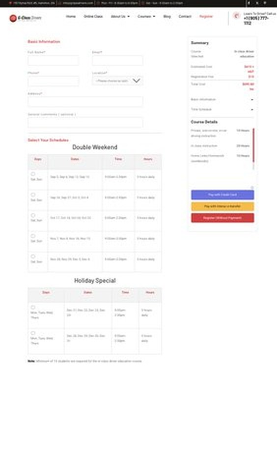
After: Live Booking Page Today
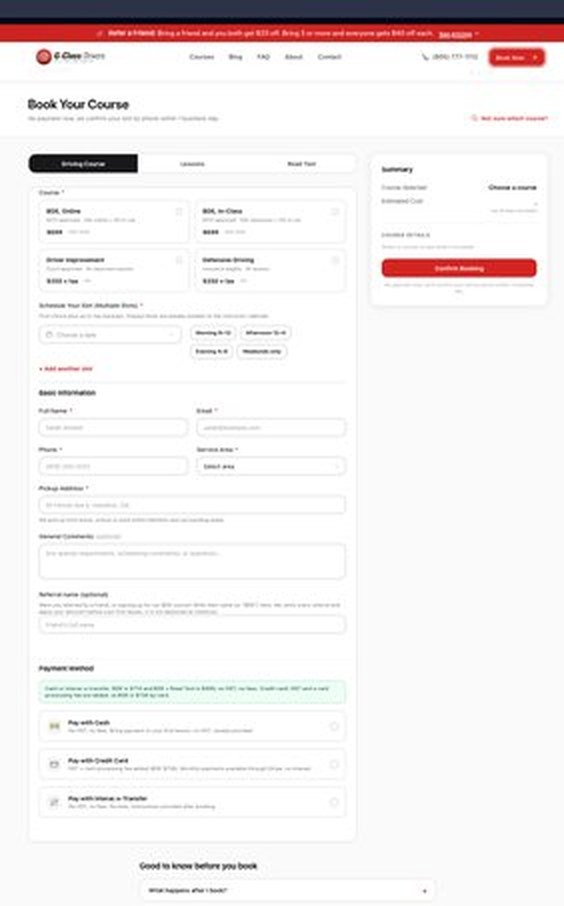
Before: contact form, two full schedule tables, then a choice of three payment methods before submitting. After: course selection, scheduling, contact details, and payment all live on one page, with everything summarized in a running sidebar as you go.
Old Site vs. Redesign, Side by Side
Old Site (gclassdrivers.com)
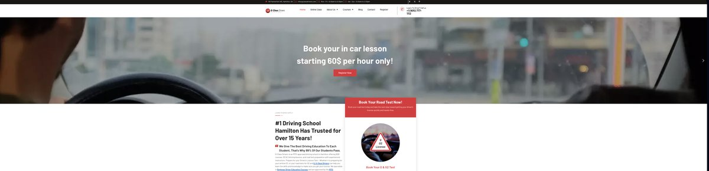
Redesign (Live Today)
Old Site (gclassdrivers.com)
- Four rotating hero slides competing for attention: a discount banner, a price banner, a seasonal offer, and the actual headline, cycling before a visitor can read any one of them
- The same course schedule table repeated three times, once per location, with identical days and hours just relabeled
- The pop-up flagged in research
- Course information split across Online Class, About Us, Locations, and a separate Courses menu
Redesign
- One hero, one headline, one primary action, with the credibility markers (MTO-approved since 2012, pass rate, locations) stated once and clearly
- A single Courses section covering all locations, instead of triplicated tables
- Pop-up removed entirely
- Everything about a course (price, hours, what's included) lives in one place
Redesign Process
Usability Testing on the Live Site
Ran a moderated task-based test on the existing G-Class Drivers website, covering four tasks: registering for a course, finding the class schedule, contacting the school, and booking a lesson. I logged where the tester hesitated, backtracked, or got frustrated.
Prioritizing Fixes
Ranked the issues by how often they blocked a task versus how much they were just an annoyance, and used that to decide what the redesign needed to fix first. The pop-up and the missing schedule location came out on top.
Rebuilding the Site
Designed and built the new homepage, course pages, and navigation structure directly, using the real course names, pricing, and locations from the business.
What the research told me
What 8 interviews and a follow-up survey kept pointing back to.
Insight 01
Scheduling drives satisfaction
Drivers wanted transparent, predictable scheduling that respected work-life balance, not just more shifts.
Insight 02
Communication breaks at the handoff
Driver-to-client-to-dispatcher communication was the recurring failure point, not any single app screen.
Insight 03
The pop-up was universal
Both interview and survey rounds independently flagged the same recurring pop-up as the top frustration.
Auditing the live site
Before designing anything, I ran a moderated task-based test on the live site.
Tasks Tested
- Register for a course
- Find the class schedule
- Contact the school
- Book a lesson
What Broke
- The pop-up interrupted almost every task
- Schedules were buried under About Us and FAQ instead of Courses
- Registration required a contact form, two schedule tables, and a choice of three payment paths before confirming
Exploring the options
The direction was set by ranking issues, not by picking favourites.
Prioritization
- Ranked every issue by how often it blocked a task versus how much it was just an annoyance
- The pop-up and the missing schedule location came out on top
Direction Chosen
- One hero, one primary action, credibility markers stated once
- A single Courses section instead of information split across four menus
- Course selection, scheduling, contact, and payment on one page with a running summary
What came out of it
The research phase produced two full reports and two presentations that the business could act on directly. The redesign phase turned that research into a rebuilt, live site rather than recommendations on paper, addressing the pop-up, the schedule visibility, and the booking flow issues the research surfaced.
What a Real Tester Said
After walking through the original site, one tester summed it up simply: it looked good and was easy to use overall, but the repeating pop-up was the one thing that kept breaking their focus. That one line of feedback shaped the top priority for this redesign.
The live site
Screens from the rebuilt gclassdrivers.com, which is what students use today.
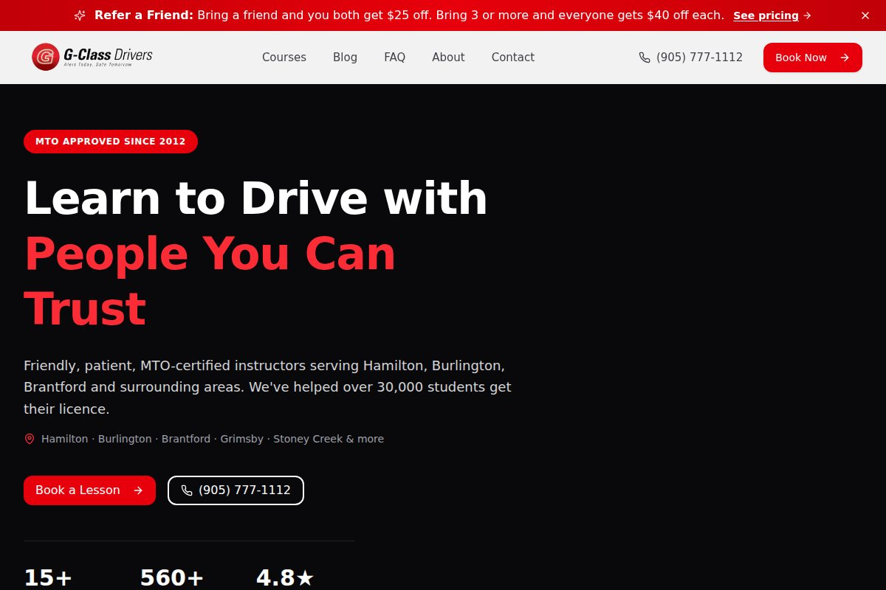
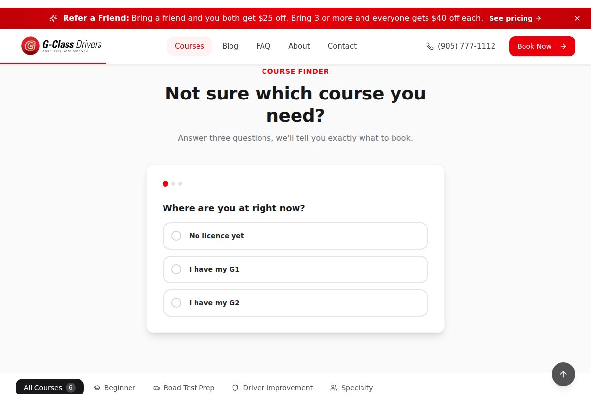
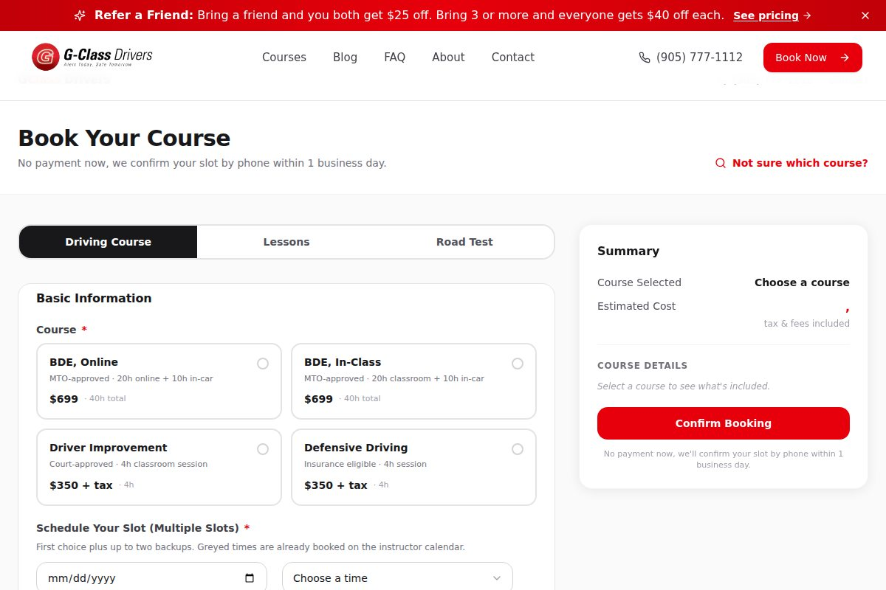
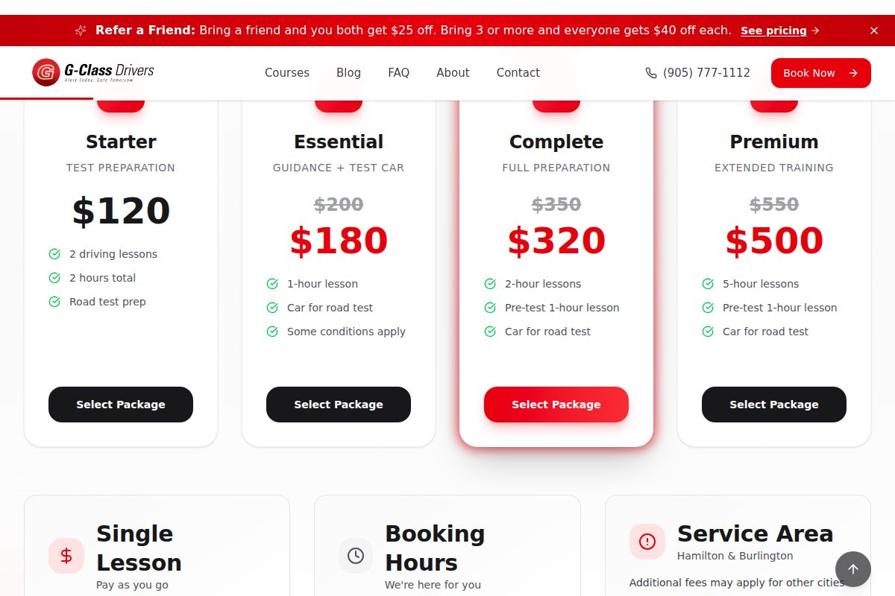
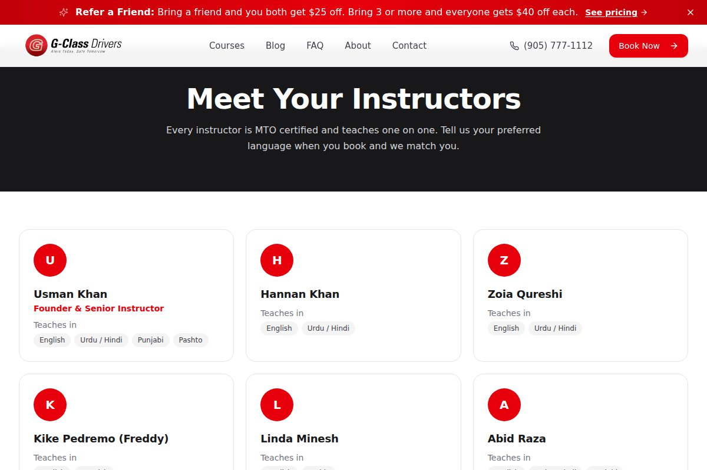
Phase 3
Taking the Office Digital
After the website, the office itself was the bottleneck. Scheduling, student records and lesson logs still lived on paper and phone calls. Phase 3 puts the whole school on one system, so students, instructors and the office all see the same thing.
Walkthrough of the Student and Instructor apps. Every name and number on screen is sample data.
Student app
Upcoming lessons, hours toward the course, skill grades, and exactly what is left before certification.
Instructor app
Today's lessons, the week on a calendar, every student's progress, a short lesson log, and approved hours for pay.
Office portal
One desktop tool where the office approves lessons and hours, creates every login, and tracks MTO certification.
 Student app
Student app


 Instructor app
Instructor app
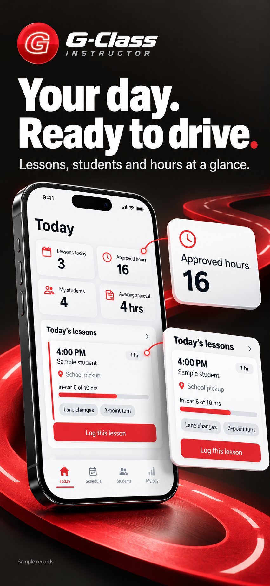
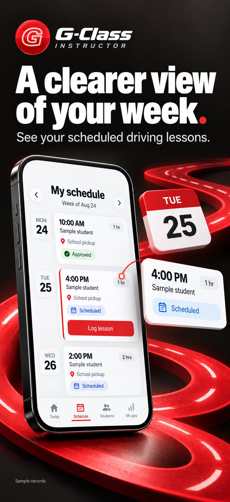
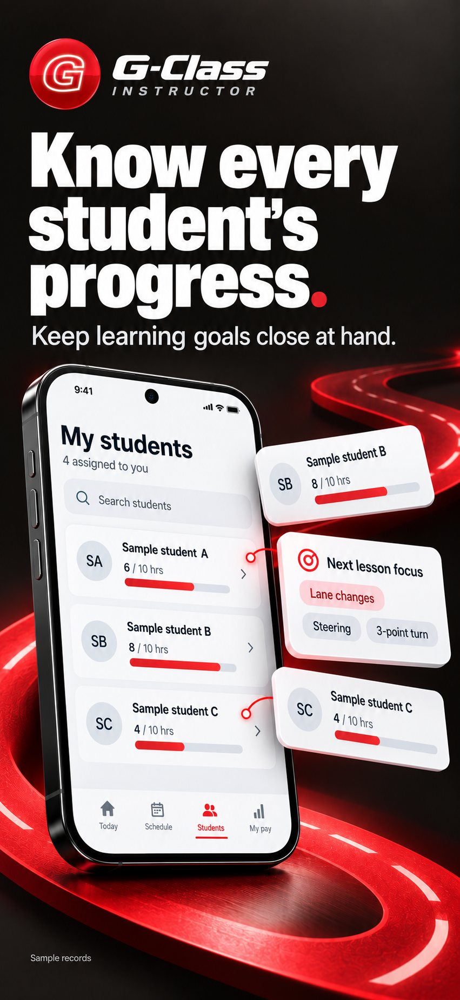
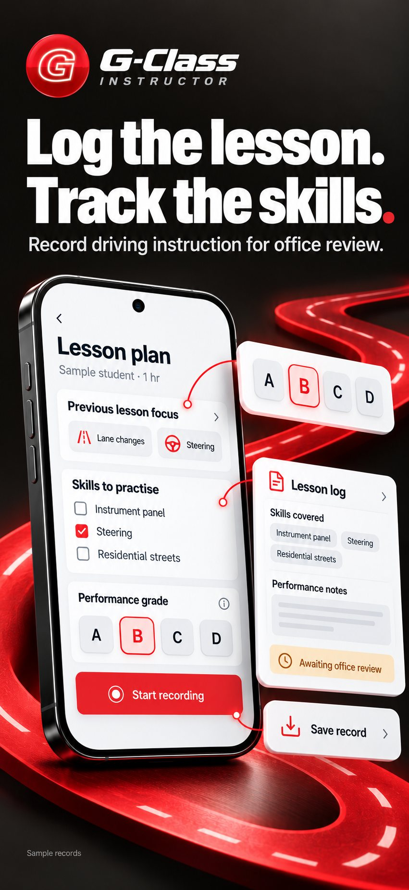
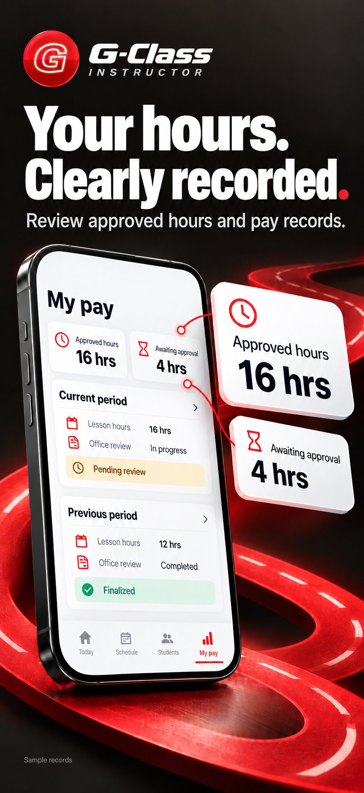
Decisions that shaped it
The calls that run through all three apps.
Keep the paper sheet, just make it digital
The in-car progress sheet instructors already used became the skills screen, with the same categories and the same A to D grades, so nobody had to relearn how to grade a student.
One job per screen
Nothing gets crammed onto one screen. Logging a lesson is four short steps, booking is three, and help, payments and passwords each get their own page.
The office stays in control
Nobody signs themselves up. The office creates every login, approves lessons and hours before they count, and handles password resets, which keeps student records private.
Private by default
Phone notifications never show a student's name. They just say to open the app for the details.
The Student and Instructor apps are in TestFlight beta, so they are not on the App Store yet.